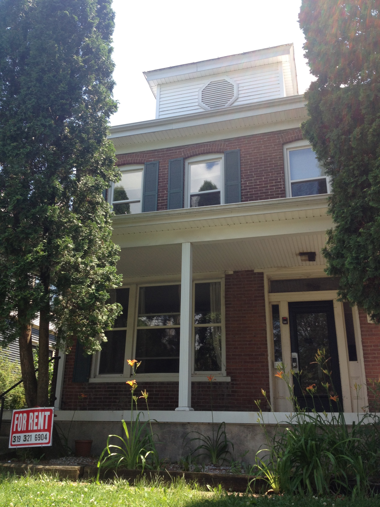
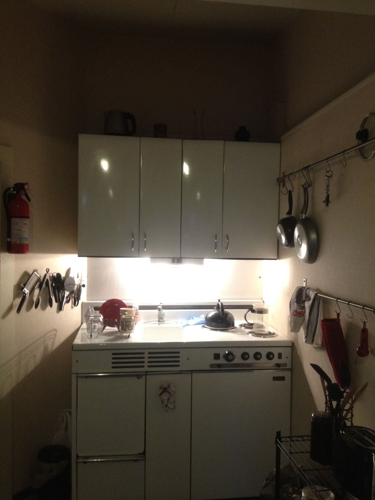
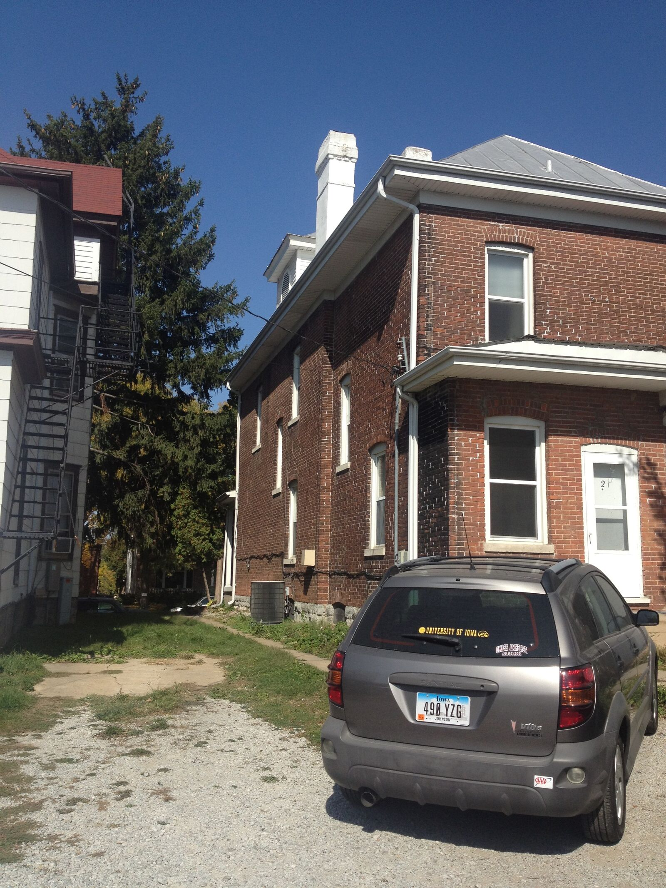
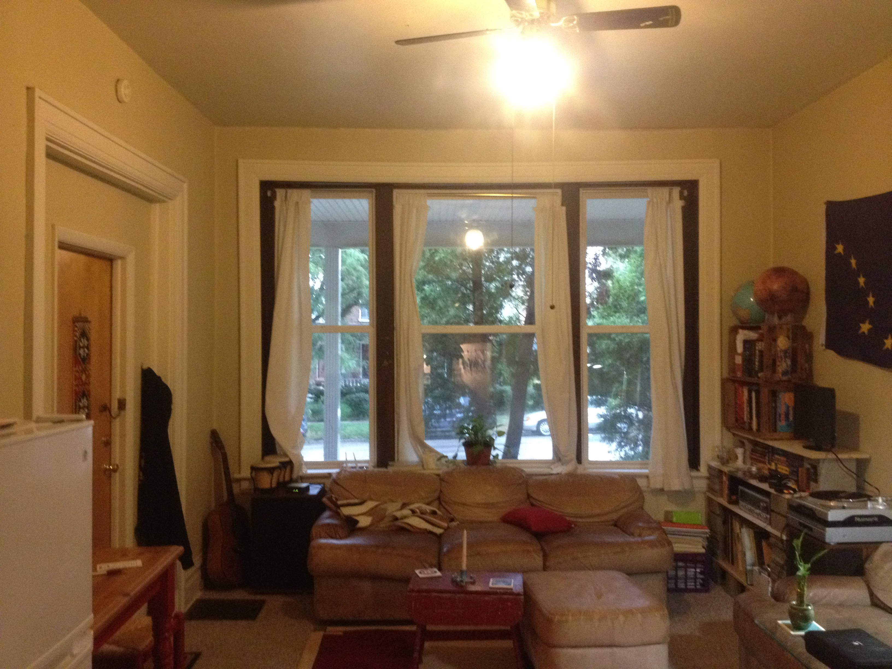
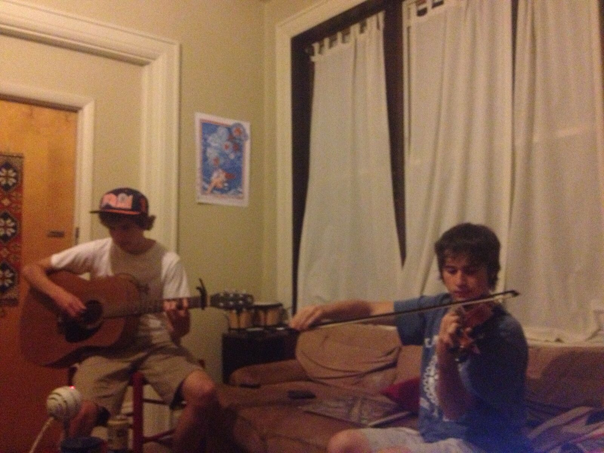

// college green apt. //
ABOUT
Jake moved into College Green Apt. in the summer of 2012 when he started his PhD program at the University of Iowa. On the corner of Iowa City's College Green Park, the apartment was a section of the first floor of an old house with tall ceilings on E. College Ave.



Jake's musical direction was unclear at this time, with his most recent involvement being with The Four B's. The musical instrumentation in house was limited initially to an acoustic guitar, a pair of bongos, and a melodica.

Summer of 2013 recording sessions...
